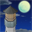
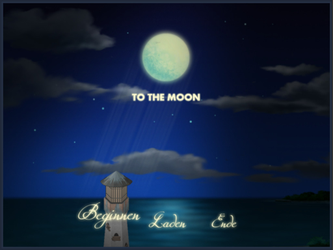
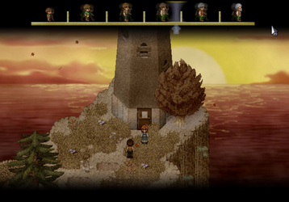
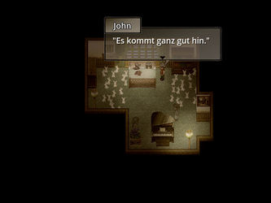
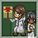

To the Moon
Dieser Artikel wurde für die folgenden Ubuntu-Versionen getestet:
Ubuntu 14.04 Trusty Tahr
Zum Verständnis dieses Artikels sind folgende Seiten hilfreich:

To the Moon  – Die meisten Menschen haben Träume, die sie in ihrem Leben verwirklichen wollen. Manchmal spielt das Leben aber anders als man es gerne hätte und so bedauert man auf dem Sterbebett, was man alles nicht erreicht hat. Wäre es nicht schön, wenn man zurückreisen und sein Leben ändern könnte, um seine Träume zu verwirklichen?
– Die meisten Menschen haben Träume, die sie in ihrem Leben verwirklichen wollen. Manchmal spielt das Leben aber anders als man es gerne hätte und so bedauert man auf dem Sterbebett, was man alles nicht erreicht hat. Wäre es nicht schön, wenn man zurückreisen und sein Leben ändern könnte, um seine Träume zu verwirklichen?
Dr. Neil Watts und Dr. Eva Rosalene sind zwei bei der Sigmund Corp. angestellte Wissenschaftler, die genau dies leisten sollen, indem sie in den Erinnerungen einer Person zurückreisen und diese so verändern, dass die Person in ihren Gedanken ein völlig anderes Leben aufbaut. Der Kunde John Wyles liegt im Sterben, hat nur noch wenige Stunden zu leben und wünscht sich nichts mehr als zum Mond zu reisen.
Also reisen Dr. Watts und Dr. Rosalene in kleinen Schritten in Johns Erinnerungen zurück. Dabei lernen sie John und seine Frau River, die bereits einige Jahre zuvor verstorben ist, immer besser kennen. Am Ende finden beide heraus, wie sie Johns Wunsch erfüllen können. Die Änderung seiner Erinnerung hat aber einen hohen Preis…
|  |
| Startbildschirm |
|  |
| Spielszene |
|  |
| Spielszene |
Installation¶
„To The Moon“ wurde 2011 für Windows veröffentlicht und schaffte es Anfang 2014 in das 10. Humble Bundle und war damit auch für Linux erhältlich. Inzwischen ist das Spiel für Linux auf Steam, Desura und im Humble Store verfügbar.
Desura¶
Nachdem man das Spiel über die Internetseite oder den Client erworben hat kann das Spiel installiert [5] und über diesen gestartet werden. Alternativ das Archiv von der Seite herunterladen, entpacken [1] und wie die Version aus dem Humble Bundle installieren.
Humble Bundle¶
Wer die Humble-Bundle-Version gekauft und die Installationsdatei z.B. unter ~/Downloads/ gespeichert hat, startet die Installation entweder per Doppelklick auf die Datei oder im Terminal [3] mit
cd ~/Downloads/ sh ./ToTheMoon_linux_1389114090.sh
Das Spiel kann man beispielsweise nach ~/ToTheMoon oder einen beliebigen anderen Ort installieren. Zusätzlich muss man bei der Installation auswählen, ob man ein 32- oder 64-bit-System hat. Mit der Installation wird ein Menüeintrag unter "Spiele -> To The Moon" erstellt.
Spielstart¶
Man startet das Spiel bei einer manuellen Installation über den Menüeintrag "Spiele -> To The Moon" oder über das Terminal [3]:
cd ~/ToTheMoon/ ./ToTheMoon.bin.x86_64
Bei Steam startet man das Spiel über die Steam-Bibliothek.
Mit dem ersten Start wird ein Spieleverzeichnis unter ~/.local/share/freebirdgames/tothemoon angelegt, in welchem auch die Spielstände zu finden sind.

Minisodes¶
Bisher sind die Minisodes Holiday Special Minisode  und Sigmund Minisode 2
und Sigmund Minisode 2  erschienen und können auch unter Linux gespielt werden. Für das erste Special wurde lediglich eine Version für Windows zur Verfügung gestellt. Im Forum findet man jedoch einen inoffiziellen Port . Die Installation erfolgt wie beim Hauptspiel.
erschienen und können auch unter Linux gespielt werden. Für das erste Special wurde lediglich eine Version für Windows zur Verfügung gestellt. Im Forum findet man jedoch einen inoffiziellen Port . Die Installation erfolgt wie beim Hauptspiel.
Da die Minisode nicht gespeichert/beendet werden kann hilft nur ein Ausstieg via + F4 .
Problemlösungen¶
Spielsprache¶
Wer das Spiel herunterlädt und installiert, erhält normalerweise die englische Version. Es gibt aber eine offizielle Übersetzung, die man im Freebird-Games-Forum findet. Vor der Installation muss man „To The Moon“ einmalig starten. Danach beendet man das Spiel wieder. Dann lädt man die Datei Deutsch.zip herunter, entpackt die Datei [1] und ersetzt die beiden Ordner Data und Graphics im Spiele-Installationsverzeichnis. Danach sind alle Dialoge und Anzeigen im Spiel in Deutsch.
Tastenkürzel¶
Das Spiel wird komplett mit der Maus gesteuert.
| Tastenkürzel | |
| Taste(n) | Aktion |
 | Steuerung |
 | Objekt anwählen |
X /  | Inventar / Notizen / Charaktere |
| Alt + ⏎ | Vollbild-/Fenstermodus |
| + F4 | Spiel sofort beenden. |
Infobox¶
| Gone Home | |
| Genre: | Adventure (hauptsächlich Erkundung) |
| Sprache: | ( durch Nachrüstung) |
| Veröffentlichungen: | 2011/2014 |
| Entwickler: | Freebird Games |
| Systemvoraussetzungen: | ? |
| Medien | Download |
| Strichcode / EAN / GTIN: | - |
| Läuft mit: | nativ |
- Erstellt mit Inyoka
-
 2004 – 2017 ubuntuusers.de • Einige Rechte vorbehalten
2004 – 2017 ubuntuusers.de • Einige Rechte vorbehalten
Lizenz • Kontakt • Datenschutz • Impressum • Serverstatus -
Serverhousing gespendet von